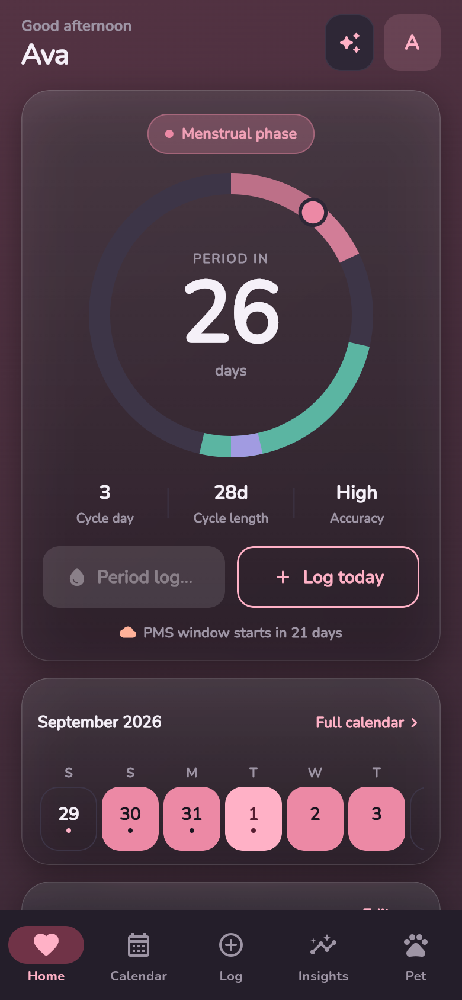
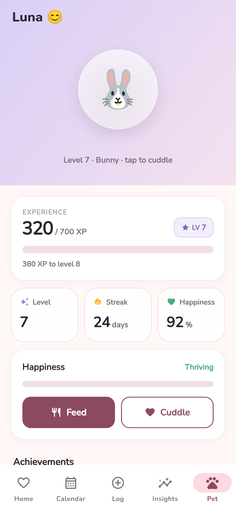
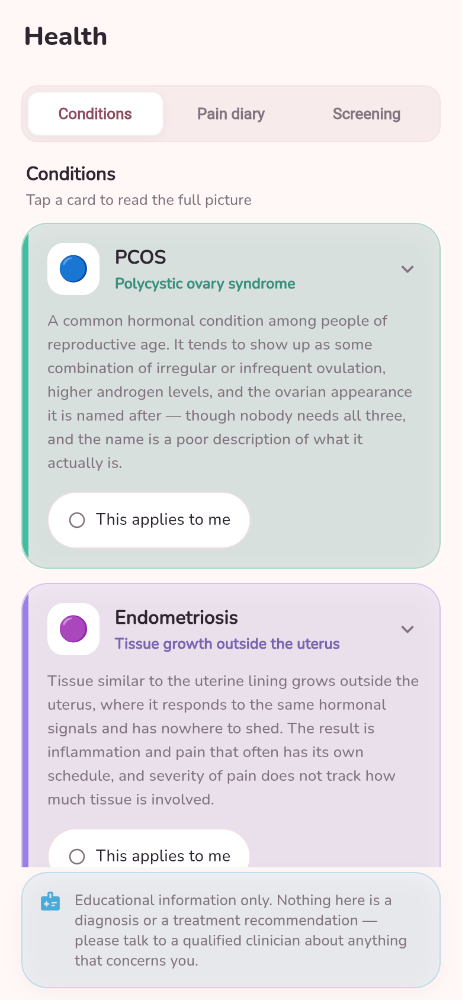
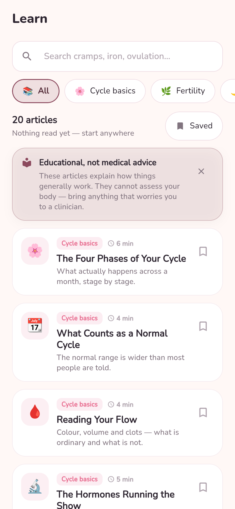
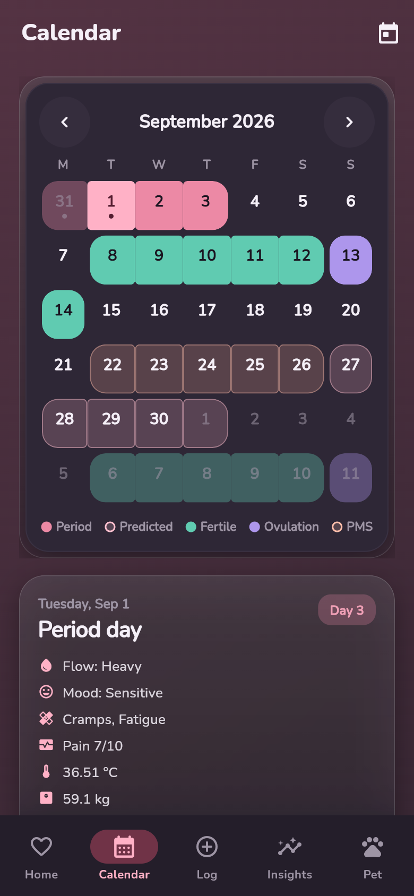
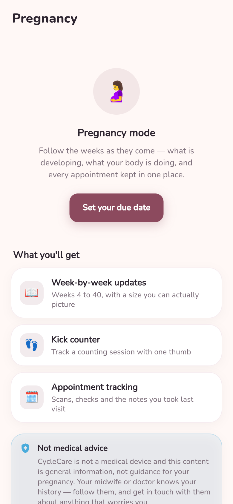
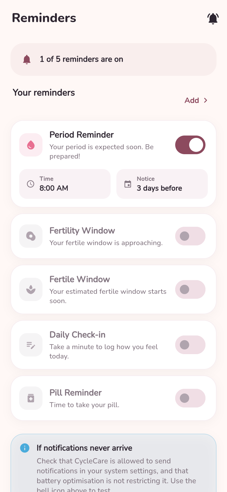
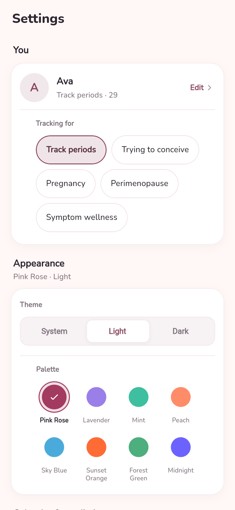

Menstrual
Your period is here. Rest counts as progress — and the app logs flow, pain and symptoms without nagging you for more.
 CycleCare
CycleCare
Menstrual health, fertility and everyday wellbeing — tracked in an app that keeps every entry on your device. No account. No trackers. No exceptions.

01 — The premise
Most period trackers are data businesses wearing a health app. CycleCare is built the other way around: your data never leaves your phone.
Signing in is optional and gates nothing. Onboarding takes you straight into a working app.
Every feature reads and writes local storage. In normal use the app never phones home.
Zero analytics, crash reporting or advertising libraries are compiled in. Nothing profiles you.
Export everything as JSON, or erase all of it, in one action from Settings.
Your period is here. Rest counts as progress — and the app logs flow, pain and symptoms without nagging you for more.
Energy and mood usually climb from here. A good window for the hard things you postponed last week.
Peak fertility, and often peak energy. Cervical signs and basal body temperature confirm what the forecast estimated.
Winding down. PMS tends to show up late in this phase, so the premenstrual window is flagged before it arrives.
Phase colours are fixed on purpose. Change your accent palette and rose still means period, teal still means fertile — an estimate is never mistaken for something you logged.
02 — What's inside
The health, planning and daily-log tools that usually live in five separate apps — in one place, working offline.
Flow, mood, 16 symptoms, pain 0–10, BBT, sleep, water, weight, cervical signs, medication and your own custom tags.
Cycle length, regularity, symptom and mood frequency, pain and basal body temperature — charted honestly.
Plain-language explainers for PCOS, endometriosis, PMDD, perimenopause and amenorrhea, plus a pain diary.
Due date from a date or your last period, week-by-week guidance, a kick counter and appointments.
Daily pill check-in with undo, current and longest streak, pack layout and adherence stats.
Six local notification types — period, ovulation, fertile window, daily log, the pill and custom.
03 — Every screen
One shared design system across every screen. Eight palettes, a light and a dark theme, and reduced-motion honoured throughout.










04 — The build
No analytics, crash reporting or ad SDKs.
Local storage for every feature.
Plus light, dark and follow-system.
Run on every push in CI.
Read, fork and audit every line.
Free, open source, and yours. Download the Android build or read every line of the source.
Android 6.0+ · APK & Play bundle on every release
CycleCare is for education and personal tracking only. It is not a medical device and does not provide medical advice, diagnosis or treatment. Predictions are estimates derived from the data you enter and will sometimes be wrong. Do not rely on CycleCare as contraception. For anything that concerns you, talk to a qualified clinician.